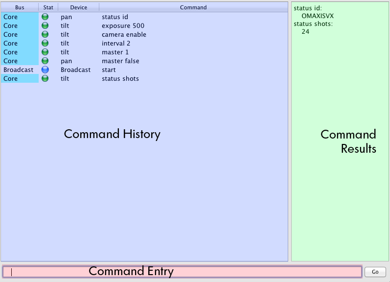
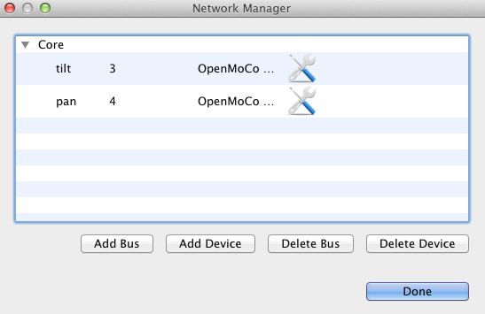
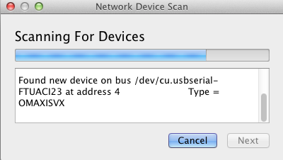
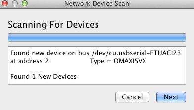
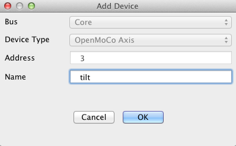

Slim is a low-level interface for interacting directly with MoCoBus-enabled devices through well-defined languages specific to each device. It is designed to interact with devices using their entire command set and to automate activities through pre-defined (or saved) scripts.
Unlike workflow-specific graphical interfaces, Slim gives the user raw access to the devices, unconstrained by graphical UI constructs. This type of interface can be most useful for new cases where a specific workflow has not yet been developed, or for advanced users that wish to break free of constraints and instruct their devices according to their exact specification. It is not designed to replace other graphical interfaces, but instead to compliment them.
The Slim User Interface is made up of three key sections: Command History, Command Results, and Command Entry.

The Command History section shows all commands entered, and will automatically scroll as needed. In the Command Results section, any command which has a data response back from a node will show the response as returned from the node. Scripting commands are entered in the Command Entry section.
The Command History section displays all commands that have been issued to all devices on the network. Each command shows the bus the device lives on, the status of the command, the device the command was issued to, and the command that was issued.
In the case of a successful command, the status of the command is shown
with a green light. Failed, or timed-out commands will have a red light,
and commands queued but not yet complete will have a blue light.
Commands are typed into the command entry section. All commands begin with the name, address, or alias of a node device on the bus, then a command name and arguments for the command. One may either press enter after typing the command, or press the Go button to issue to the command to the device.
To understand how devices and buses are related, we must first define a few terms relevant to MoCoBus:
The Manage Network screen allows you to manage buses, and devices directly. To access this screen, go to Network and then select Manage Network.

Before you can add a device, you must add a bus. To add a bus, choose the 'Manage Network' option at the top, and then select 'Add Bus'. The dialog will present a list of available serial devices, and allow you to choose a name for the bus. The bus will be identified by this name in the future. You may also choose a color for the bus, this will be displayed in the Command History section to help identify which bus the device is on when viewing the command history. When saving this bus, Slim will automatically connect to the bus.
After you have added a bus, you may now manually add your devices which live on the bus, or scan for devices on the bus. To manually add a device, click on 'Add Device'. You will be prompted to select the bus which the device is connected to, enter the address, and the name of the device. If you choose an address or name which is already in-use, an error will be presented.
All bus and device information is stored permanently, and Slim will automatically re-connect to the buses you've added and restore all devices when started. You may delete any existing device or bus in the 'Manage Network' window.
You can scan for devices on all currently connected buses using the Scan for Devices option under Network. Clicking this option will present the scanning screen which shows scanning progress, and notes which devices it finds. During scanning, it will find all attached devices and discover what type of device they are. If no devices are found after scanning has completed, click Cancel or Done to dismiss the screen.

If devices are found, the Next button will be activated. When you click this button, you will be prompted to provide a name for every device found. If a particular device type is not known or supported, you will be given an error for that device and be allowed to proceed to the next found device.


When you get a new MoCoBus device, it comes with a default address of
'2'. There are two ways to initialize the device for the first time:
either automatically, or manually.
To initialize a new device automatically, go to Network, and then
Initialize Device. The device scanning screen will be presented, and if
the device is discovered at address 2, the Next button will be displayed.
For manual initialization, see Changing Device Addresses below.
All MoCoBus compatible devices support the core address change command
(see Slim Scripting, below). After connecting the device and adding it as
a new device using its default address, you should then submit an address
change command to the device using the core scripting command, with a new
and unique address. Afterwards, using the Network Manager, delete the old
device address and add a new device with the new address. Alternatively,
if you are initializing a device for the first time, you can use the
Initialize Device option to automate this process. See the section
directly above this one.
Slim is designed as a scripting environment, and can be done
interactively or via saved scripts. Each slim script consists of a number
of commands, prefixed with a device name, address, or alias - directing
slim as to which device the script command should be sent to. Note that
for many commands that accept Boolean arguments, such as "enable or
disable," or "on or off," you can substitute the numeric values of 1 and 0
for the textual argument.
There are two ways to create a slim script: you can either create one by hand, using your favorite text editor, or capture the history in a current slim session to a file for future playback.
Within a slim script, each command must exist on a line of its own. Any line that begins with a # symbol is considered a comment, and is ignored by the parser. Blank lines are ignored, and leading whitespace is trimmed from any line. Slim scripts should generally end in a '.slim' file extension to differentiate them from other files. Like in the interactive command entry, every slim command must be prefixed by a device name, address, or alias.
To capture the command history to a script file, choose 'File' and then 'Save Slim Script'. The entire command history will be saved into the file.
To load a saved slim script, choose 'File' and then 'Open Slim Script'. The script will be loaded, parsed, and the commands issued as they are parsed. If there are any errors attempting to issue any commands, they will be reported after loading and executing is completed.
There are two types of core scripting commands: those recognized by the slim interpreter and handled without contacting a device, and those which every device must understand. They are documented here. For device-specific commands, see the section specific to that device.
The following core commands are defined for every device:
| Command | Description |
| status id | Requests the device identifier string from the node device |
| status bus | Requests the core bus protocol version from the node device |
| status version | Requests the device-specific version number from the device |
| address <newaddress> | Change device address to <newaddress> |
In addition to commands directed to a specific device, the MoCoBus protocol allows for broadcast commands to be sent to all devices on a bus. When using a broadcast command, it will be sent to all devices on the network, on every bus. A broadcast command is identified by being directed to a device named 'broadcast', for example:
broadcast start
All broadcast commands are built-in, and only devices which support them will react to them. No devices will respond to a broadcast command, and therefor the result of a broadcast command will be success.
The following broadcast commands are supported:
| Command |
Description |
| start |
For devices that support automatic operation, start operating
automatically |
| stop |
For devices that support automatic operation, stop operating
automatically |
| pause |
For devices that support automatic operation, pause operating
automatically |
The nanoMoCo node device type provides advanced control over a single stepper motor and a single camera. Multiple nanoMoCo devices can be used to synchronize movement between multiple stepper-driven axes. nanoMoCo devices provide the ability to either interactively control each axis as needed, or to run autonomously after configuration throughout the duration of a shot.
While the nanoMoCo controllers are designed for photographic and video use, they can also be used for many other purposes involving stepper motor automation.
Whether using a nanoMoCo device in interactive, or automatic operation, the first step in working with the nanoMoCo device is to set the basic parameters for operation. You will want to determine if the motor and camera should be enabled, whether the driver should be disabled between moves, and the parameters for how the motor and camera will operate. While the complete scripting language is documented below, the following is a brief example of a script for an axis named 'pan', performing the setup operations:
# enable the motor pan motor enable # set the maximum speed in steps/second pan max speed 1000 # enable the camera pan camera enable # link focus with shutter control pan tie on # set microsteps setting for motor driver pan ms 8
The following is a complete list of supported Slim script commands for this device type, with detailed documentation below the table:
| Command | Description |
| General Commands | |
| start | Start automatic operation |
| stop | Stop automatic operation, clear out all runtime parameters |
| pause | Pause automatic operation, leaving runtime parameters in-place |
| debug | Enable or Disable debug output pin |
| status | Request current information |
| master | Set as timing master or timing slave |
| max | Control maximum operating parameters |
| Motor Commands | |
| motor | Enable or Disable motor |
| ms | Set motor microstep value |
| sleep | Enable or Disable sleeping the stepper driver between movements |
| continuous | Enable or Disable continuous movement |
| speed | Set current continuous movement speed |
| stopmotor | Stop continuous motion currently running |
| move | Make a movement immediately |
| easing | Set movement easing algorithm |
| sethome | Set current position as home |
| home | Return immediately to home |
| steps | Set # of steps between shots for automatic operation |
| plan | Plan an interleaved motion path for automatic operation |
| Camera Commands | |
| camera | Enable or Disable the camera control |
| expose | Expose the camera now |
| tie | Tie focus line to shutter line Enable or Disable |
| interval | Set the interval time for automatic operation |
| exposure | Set the exposure time for automatic operation |
| focus | Set the focus time for automatic operation |
| delay | Set the post-exposure delay time for automatic operation |
| repeat | Set the repeat count for each exposure in automatic operation |
start
Starts automatic operation immediately
stop
Stops automatic operation immediately, clears out all runtime parameters. Can also be used to clear out step limit, shot count, and steps moved in interactive control.
pause
Pauses automatic operation, without clearing any runtime parameters. Use start to re-start operation where it left off
debug [on|off]
Turns on or off the debug output. This output may typically be used to run an LED or perform some other action.
status <parameter>
Requests current status from the node, can ask for one of the following parameters:
| Parameter | Description |
| time | Get current runtime (in mS) |
| interval | Get current interval value |
| exposure | Get current exposure value |
| delay | Get current delay value |
| shots | Get current shot count |
| camera | Get current camera enable value |
| exposing | Whether camera is currently exposing |
| motor | Get current motor enable value |
| moved | Get current steps moved value |
| home | Get distance from home |
master [true|false]
Enable or disable timing master for this node. See "Multi-Node Operation" below.
max <parameter> <value>
Sets a limit parameter maximum value. The following parameters are supported:
| Parameter | Description |
| shots | Maximum number of shots before automatic program stops executing |
| steps | Maximum number of steps before motor movement will be prevented |
| speed | Maximum speed (in steps/sec) of any continuous movement |
| rate | Maximum stepping rate of the internal stepper control |
motor [enable|disable]
Enables or disabled motor control. If disabled, you will not be able to make the motor move at all.
ms [1|2|4|8|16]
Sets the microstep amount to one of five legal values. A value of 1 indicates no microstepping. Takes immediate effect.
sleep [enable|disable]
Enable or disable sleeping of the motor driver between moves. This saves power by not using motor current between moves, but will require external braking of some sort for many types of axes. This is enabled by default.
continuous [enable|disable]
Enable or Disable continuous (always running) motion. See "Motion Control" below.
speed <value>
Sets current continuous motion speed, in steps/second. See "Motion Control" below.stopmotor
Stops the motor from continuous or other motion immediately, without also stopping the execution of automatic operation if currently playing.move ...
Execute a move immediately. See "Motion Control" below for more information.easing [linear|quad|invquad]
Set the easing type for moves with easing. Can specify linear, quadratic, or inverse quadratic. See "Easing Algorithms" below.sethome
Sets the current position of the motor as "home"home
Sends motor to the "home" position immediatelysteps <steps>
Sets the number of steps to move at each interval in automatic operation, for simplistic motion profiles. See "Motion Control" below.plan ...
Plans a complex movement in interleaved (shoot-move-shoot) motion. See "Motion Control" below.
camera [enable|disable]
Enables or disables the camera exposure output
expose <ms>
Immediately expose the camera for <ms> milliseconds
tie [enable|disable]
Tie the focus line to the shutter line such that the focus line is always activated when the shutter line is activated. This resolves many shutter control issues for many cameras.
interval <ms>
Set the intervalometer time in milliseconds. See "Motion Control" below.
exposure <ms>
Set the exposure time for the camera control in automatic operation. Set to 0, or disable the camera to prevent exposure during automatic operation.
focus <ms>
Set the focus time for the camera control in automatic operation. Set to 0 to prevent focusing during automatic operation.
delay <ms>
Set the post-exposure delay for the camera control in automatic operation. Set to 0 to prevent delaying after exposure during automatic operation.
repeat <count>
Set the exposure repeat count for automatic operation. Exposure cycle will repeat this many times. See "Automatic Operation Workflow" below.
Motion control with the nanoMoCo controllers is achieved in one of two ways, either interactively by issuing commands as-needed, or automatically by specifying the parameters of the shot and letting the nanoMoCo perform the required activities as needed.
For most video-based works, motion will happen continuously. That is, whether shooting time-lapse or real-time video, the motors will continue to move until they reach their desired destination as the camera records. For certain types of timelapse and stop-motion shooting, it is advantageous to only move the motors when the camera is not recording - this type of movement is referred to as "interleaved," or "shoot-move-shoot." The nanoMoCo controllers have the ability to perform either type of motion, with different options appropriate to your specific workflow.
The nanoMoCo is capable of automatically making simple and complex moves - both in real-time and in interleaved motion. For real-time moves, rapid positioning, and continuous motion, the move command is used. There are two forms of this command:
In the first form, this is considered a "simple move". The axis moves at the currently configured max speed until it reaches the destination (specified in steps), with a short and fixed acceleration and deceleration period. This is typically used as a positioning activity, and would rarely be used to create the video motion, as it offers little control. The second form of this command defines a complex move where a destination is specified, an arrival time, an amount of time to accelerate, and an amount of time to decelerate. All times are expressed in milliseconds. When using the complex move form, the accel/decel profile is specified with the easing command. The following is an example of making a complex move in a continuous fashion, with quadratic easing:move <direction> <steps>
move <direction> <steps> <time to arrive> <time to accel> <time to decel>
In the above example, an axis named 'slider' is moved in the true direction for 10,000 steps. The axis will arrive at the destination in one minute (60,000 mS), accelerate to full speed over 15 seconds, and decelerate over 5 seconds. The motor will automatically stop upon reaching the destination.slider easing quad
slider move true 10000 60000 15000 5000
Note the structure of the simple move command: it is told to move zero steps. When in continuous mode, this allows you to still do basic positioning with a standard simple move command while being able to move continuously when needed. You can change the speed anytime during the movement using the speed command, and the effects will be immediate. To stop the motion, use the stopmotor command:slider continuous enable
slider speed 500
slider move true 0
Interleaved motion requires automatic operation, and is covered in the next sub-section.slider stopmotor
In automatic operation, the nanoMoCo controller performs all actions at the right time on your behalf, after having been configured. Timing of events is controlled by the internal intervalometer, even if the camera is not being controlled.
In automatic operation, the intervalometer fires at the requested
interval, and triggers an exposure cycle if the camera is enabled. If the
motor is also enabled, it is controlled as needed. All parameters for
operation are set, and then a start command is issued to begin
operations.
For continuous movement in automatic operation, the easiest form is to use the single-speed continuous motion, e.g. by enabling continuous motion, the motor, and specifying the speed. The following script example would fire the camera every 5 seconds, while moving continuously at 50 steps/second:
Of course, this results in fairly boring movement. We can use a complex form of a continuous move as well, after starting automatic operation:slider motor enable
slider continuous enable
slider speed 50
slider camera enable
slider exposure 100
slider interval 5000
slider start
In this case, we move 10,000 steps over an hour, with 15 minutes up ramp-up time and 30 seconds of ramp-down time. Note that we disabled continuous motion, as we're using an advanced move to control the motion.slider motor enable
slider continuous disable
slider camera enable
slider exposure 100
slider interval 5000
slider start
slider move true 10000 3600000 900000 30000
Now, to make a complex move with acceleration and deceleration, we can use the plan command which will plan out a sequence of interleaved moves for us to achieve our goals. The plan command has the same argument structure as a complex move, but instead of time in milliseconds, it uses intervals (or shots, as it were):slider motor enable
slider continuous disable
slider steps 100
slider max speed 500
slider camera enable
slider exposure 100
slider interval 5000
slider start
In this case, we're moving 10,000 steps over 720 shots (1 hour at 5 second intervals), with 20 shots to accelerate to full speed, and 20 shots to decelerate to a stop. Automatic operation will automatically stop when the planned move is complete.slider motor enable
slider continuous disable
slider max speed 500
slider plan true 10000 720 20 20
...
slider start
We can stop automatic operation directly by using the stop command. However, we can also have automatic operation stop automatically one of two ways:
If you specify a maximum shot count, automatic operation will stop immediately after that number of shots have been taken. When a planned interleaved movement is completed, movement will automatically be stopped as well. If both a maximum shot count AND a planned interleaved sequence is used the first one to reach its end will cause the problem to stop.
If you specify a max steps parameter, it will stop the motor from moving (whether continuous or interleaved) when the max steps is complete, but will not otherwise stop automatic operation.
You can pause automatic operation at any time using the pause
command, and start where you left off again using the start
command.
1: Interval timer triggers or slave clear signal received
2: Determine if the camera should be fired
2.a: camera is enabled
2.a.1: trigger focus
2.a.2: on focus complete, trigger shutter
2.a.3: on shutter complete, trigger post-exposure delay
2.a.4: on post-exposure delay complete, go to 2.b
2.b: Check camera repeat cycle
2.b.1: camera exposure is to be repeated
2.b.1.a: repeat count not yet achieved
2.b.1.a.1: go to 2.a.1, increment repeat counter
2.b.1.b: repeat count achieved
2.b.1.b.1: clear repeat counter
2.b.1.b.2: go to 3
3: Determine if motor should be moved
3.a: motor should be moved, continuous motion
3.a.1: Motor not running, not yet at final position
3.a.1.a: start motor moving
3.a.1.b: go to 1
3.a.2: Motor running, not yet at final position OR motor not running, at
final position
3.a.2.a: go to 1
3.b: motor should be moved, interleaved motion
3.b.1: Not yet at final position
3.b.1.a: move motor specified amount
3.b.1.b: block state engine until move complete
3.b.1.c: go to 1
3.b.2: Motor at final position
3.b.2.a: go to 1
3.c.: motor should not be moved (not enabled)
3.c.1: go to 1
Using multiple nanoMoCo nodes together, you can create highly complex sequences of movement. To keep nodes synchronized, you must connect the Common lines of all nodes together, and then elect a single timing master among them. The timing master will be node that controls the primary camera (if camera control is desired), and will be the only node with an intervalometer running. The remaining nodes will execute their workflow steps when a slave clear signal is sent by the master down the common lines. The following script demonstrates three nodes, slider, pan, and tilt, operating together with the tilt being the node controlling the camera:
tilt master enable
tilt motor enable
tilt continuous disable
tilt plan true 10000 720 20 20 tilt camera enable
tilt exposure 100
tilt interval 5000
pan master disable
pan motor enable
pan continuous disable
pan plan true 10000 720 20 20 pan camera disable
slider master disable
slider motor enable
slider continuous disable
slider plan true 10000 720 20 20
slider camera disable
broadcast start
Note that we used the broadcast start command here. This starts all nodes
together, in sequence and at the same time. nanoMoCo respond to all of the
following broadcast commands: start, stop, pause.
There are two primary algorithms supported for easing: linear and quadratic. All easing methods can be applied at the maximum step rate of 5,000 steps/second.
Linear easing allows for quick and highly accurate move calculations. The position of the motor in space follows a smooth, natural curve - however the acceleration profile is entirely linear. This can result in some moves, especially real-time video moves appearing "robotic" or "mechanical" in the output video. However, some moves will benefit from this method, especially very precise moves as linear easing has no error during a real-time move, whereas quadratic easing has a very small error rate which becomes more apparent in shorter moves. (This error rate is usually less than 0.05 steps past the expected position, meaning it has little impact on most moves.)
Quadratic easing provides an acceleration curve which is non-linear, and can provide smooth transitions in speed - with a fluid curve that appears more like that which a human can produce rather than the linear change in speed produced by a computer.
The following diagrams show the difference between linear and quadratic easing applied to the same move of 2,000 steps over 500 seconds, with 100 seconds in acceleration and 200 in deceleration:
As we can see from the above graphs, both moves arrive at the same point and at the same time and reach their top speeds at the same time, but the quadratic acceleration profile results in a higher top speed where the acceleration begins slowly and then increases as it nears the crusing speed. Quadratic deceleration, likewise, starts decelerating slowly and increases as the move reaches a stop.
While normal quadratic easing provides us a period where acceleration increases as we reach the top speed, there are cases where it would be advantageous to do the inverse - that is, invert the acceleration curve so that it starts at the maximum acceleration rate and the rate of acceleration decreases as the move nears its cruising speed. This easing mode is provided as the inverse quadratic easing mode.
The following diagrams illustrate the difference between the two forms of easing and their effects on the placement and speed of the motor over time:
Here we find that the acceleration begins so sharply that the maximum speed is reduced.
Using an inverse quadratic easing algorithm with acceleration and deceleration periods nearest to dead-center in time will result in an approximation of the smoothstep algorithm. E.g.: specifying a move of 2000 steps, over 500 seconds with 249 seconds spent accelerating and 249 seconds spent decelerating, results in the following speed profile: